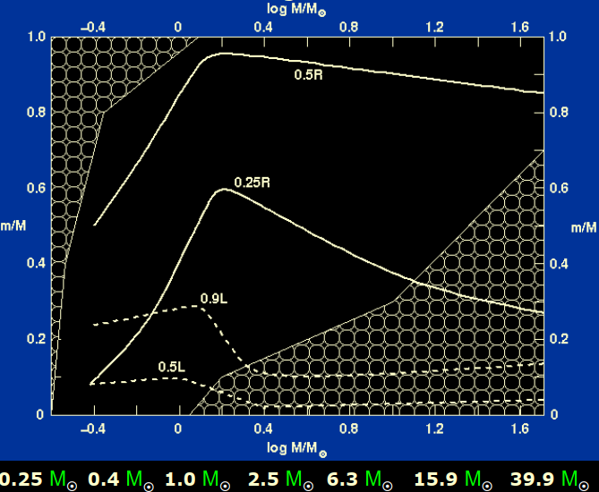

恒星结构
恒星是引力与核反应的产物。它由自身的引力所束缚，使得外观上看起来普遍为球形。并由内部的能量源、通过核反应辐射出能量。
我们常用质量M、光度L、半径R、有效温度T来对恒星进行描述。其中光度L为每秒辐射出的能量，有效温度则是相同半径相同光度的黑体温度。
恒星结构方程
为了研究恒星结构，前人理想近似假设出了四个恒星结构方程。
- 流体静力学平衡方程：
- 质量守恒方程：
- 能量守恒方程：
- 辐射传输方程：
此外，还有三个辅助方程：
- 状态方程：
- 不透明度方程，会随着温度变化参数值：
- 核反应产能率方程：
核反应
对于恒星，核反应最常见的为质子-质子链，该反应有三个主要的分支：
- 质子质子链一
- $p+p \rightarrow d+e^+ +\nu_e$
- $d+p \rightarrow \,^3 He +\gamma$
- $\,^3 He +\,^3 He \rightarrow \,^4 He +2p$
- 质子质子链二
- $\,^3 He +\,^4 He \rightarrow \,^7 Be +\gamma$
- $\,^7 Be +e^- \rightarrow \,^7 Li +\nu_e$
- $\,^7 Li + p \rightarrow \,^4 He + \,^4He$
- 质子质子链三
- $\,^7 Be + p \rightarrow \,^8 B +\gamma$
- $\,^8 B \rightarrow \,^8 Be + e^+ +\nu_e$
- $\,^8 Be \rightarrow 2\,^4 He$
此外还有碳氮氧循环反应，该反应为六步：
- $\,^{12} C + p \rightarrow \,^{13} N + \gamma$
- $\,^{13} N \qquad \rightarrow \,^{13} C + e^+ + \nu_e$
- $\,^{13} C + p \rightarrow \,^{14} N + \gamma$
- $\,^{14} N + p \rightarrow \,^{15} O + \gamma$
- $\,^{15} O \qquad \rightarrow \,^{15} N + e^+ + \nu_e$
- $\,^{15} N + p \rightarrow \,^{12} C + \,^4He$
两者的反应效率为：
由此可得，当两者反应速度相等时，反应温度为：
低于该温度时pp链反应为主，高于此温度时CNO循环为主。
在温度低时pp链反应为主，且最开始没有重元素时也只能以这个反应进行，相比之下效率较低。
当恒星有CNO元素时，便会以更高的效率进行核反应，元素起到了催化剂的作用。
同源模型
利用上述的方程，为了能够预测模拟恒星，建立了同源模型。根据同源性假设，即为相同质量的恒星所有物理量都相等，意为所有的物理量都是质量的函数。
数学表示为：
通过将其代入四个基本方程中：
可以得到：
对于光度与温度的关系有：
可以得到：
与观测结果符合的不错。
恒星内部
对于恒星内部，可以用下图描述。

图中阴影部分为对流传热，透明部分为辐射传热。
如图，低质量恒星以对流传输为主，太阳质量恒星以辐射传输为主，表面为对流传输，大质量恒星核心为对流传能，表面为辐射传能。
恒星绝大部分质量都集中于中心，当达到0.5倍半径，1/8体积时，已经占据了绝大部分质量。
恒星的核反应区在核心处，由图可见，当尚未达到0.25倍半径，仅有1/64体积时，恒星核反应产生的光度已达到90%。
对于判断是否为对流传热，可用史瓦西判据：
若满足则为对流传热。
类太阳恒星的演化
与太阳质量类似的恒星，最后大都会演化为矮星。而在这过程中会经历许多不同的阶段，为
- 主序阶段
- 亚巨星阶段
- 红巨星阶段
- 水平分支阶段
- 渐进巨星支阶段
- 行星状星云与白矮星阶段
主序阶段
恒星的稳定存在需要满足流体静力学平衡，而林忠四郎线就是边界条件。在恒星形成时，演化的轨迹沿着林忠四郎线进入到主序星区。
恒星的大部分寿命都在主序阶段，例如太阳会存在100亿年，而这过程中太阳不是稳定不变的，而是会缓慢地发生变化。在主序阶段时，恒星的温度会不断上升，光度不断增加。
以太阳质量的恒星，核反应的主要部分为pp链反应，氢聚变形成氦。由于四个氢原子生成一个氦原子，粒子数量会减少。由于理想气体近似，粒子的数目减少后，气体的压强也会逐渐减小，导致逐渐不能抗衡万有引力，使核球收缩。在核球收缩的同时温度上升，使得压强再次与万有引力平衡。而核心温度上升后，光度自然也增加，从而达到了先前所说的过程。以太阳为例，太阳如今的光度相比原初的太阳光度增加了30%，在主序星阶段即将结束时，太阳光度可能为如今的两倍。
当氢气耗尽时，恒星的核心就变成了氦核。氦核外面仍会有未核反应的氢薄包层，而由于引力导致氦核收缩、释放引力势能，核心温度升高，包层也会燃烧起来，实现能量的向外传递，导致恒星外层膨胀。此时恒星光度不会发生显著变化，但由于半径R的膨胀增大，表面温度T会开始下降。由此恒星开始脱离主序星阶段，进入亚巨星阶段。在赫罗图上表现为朝右上方移动。
亚巨星阶段
在核心变为氦核收缩后，引力势能使得温度增加。而碳氮氧循环的核反应对温度变化敏感且反应更加剧烈，在温度增加后，包层的核反应中碳氮氧循环反应的比例增大，也由此反应变得更加剧烈，从而导致外层膨胀，表面温度下降。当外层膨胀到一定量、氦核收缩到一定量后，恒星进入到红巨星阶段。
红巨星阶段
在亚巨星阶段氦核收缩后，电子开始简并。电子简并压与引力相互平衡。氦核简并的同时，外层也在进行膨胀。在氦核完全简并后，外层的能量传输变为对流传输时，也就达到了红巨星阶段。
在赫罗图上，恒星演化的运动朝着右上方向，与林忠四郎线平行。
在恒星进入到红巨星阶段后，恒星温度变化不大。由于外层不断膨胀，对流使得能量传输变得迅速，光度急剧增加。半径增加迅猛，例如太阳在红巨星阶段体积扩大到375万倍，半径超过金星轨道。此刻核心温度极高而表面温度很低，体积大但是质量小，非常的明亮。
水平分支阶段
在红巨星后期后，氦核温度不断升高，可以达到上亿度，使得氦能够发生核反应。氦聚变产生大量能量，使简并态的电子获得更多的动能，打破了简并的状态，成为理想气体状态。这一段过程发生迅速，约为几秒钟至几分钟，即为氦闪，产生光度极高，但由于发生在氦核处，难以传递至外界。
在氦核的燃烧阶段，也被成为水平分支阶段。此刻核心为正在核反应的氦，周围是由于温度不够高而未核反应的氦，再外一层是核反应的氢包层，再往外则是未核反应的氢包层。
在核球氦进行核反应的同时，核球也会由于能量的传递而膨胀。由维里定理可以证明，核球膨胀的同时，外包层则会开始收缩。随着半径减少，恒星的表面温度会上升。
渐进巨星支阶段
在核心的氦消耗结束，转化为碳核后，恒星进入到渐近巨星支阶段，碳核中的电子开始简并，外层开始膨胀。
此时恒星核反应复杂，核心为碳核简并收缩释放引力势能升温，外层为氦核反应，再外层则是氢核反应。随着过程的进行，与红巨星阶段类似，核球不断简并，外包层不断膨胀，使能量传输为对流态。光度急剧升高。对流传输的同时，
在赫罗图上，恒星演化的运动朝着右上方向，与林忠四郎线平行。
在发生核反应时，氦核反应的进程为triple-alpha反应，氢核反应的进程为CNO循环反应，两者的效率都对温度的变化相当敏感，温度越高则反应越剧烈，也导致了反应时不稳定，产生热脉冲现象，使壳层中发生不稳定的氦闪现象，把外部25%-60%的壳层抛出 。
行星状星云与白矮星阶段
抛出壳层后，在核心部分形成了高温电子简并的碳氧核，抛射出的物质形成行星状星云，同时生成强烈的星风，而致密碳氧核即为白矮星。由于核中心电子简并压高，释放引力势能也导致温度高，在赫罗图上表现为恒星向左移动，温度升高。即为抛射物质阶段。
到最后，由于白矮星几乎不再进行核反应，温度逐渐冷却，亮度也开始降低，最终达到黑矮星阶段，至此演化结束。
大恒星的演化（25$M_\odot$）
大恒星的演化会经历许多不同的阶段，为
- 主序阶段
- 亚巨星阶段
- 红巨星阶段
- 水平分支阶段
- 渐进巨星支阶段
- 中子星或黑洞阶段
主序阶段
与类太阳质量恒星不同，大质量恒星的主序阶段不一样。由于质量大，使得核心温度更高，恒星内部的核反应方式以对温度敏感的碳氮氧循环为主。由此，核反应的效率相比类太阳恒星更加剧烈。这使得核心处能量以对流的方式传输。
而由于核心处的对流，起到了搅拌混合物质的作用，使得核心处的化学成分均匀。随着演化进行，与太阳质量恒星类似，光度逐渐升高，半径增大，温度略微下降。
当核心部分的氢耗尽时成为氦核后，核反应便不能继续进行。也由于对流的作用，使得整个氦核为等温。虽然在核心外仍有氢，但此处的温度相对更低，导致不能发生核反应。由于不再产生辐射压与引力平衡，恒星便会整体收缩释放引力势能。在收缩半径减少的同时，光度变化不大，恒星的温度升高。由此在赫罗图上轨迹为一个钩子形。
亚巨星阶段
引力势能对核心起到加热的作用，使氦核与其周围温度升高，包围氦核的氢也由于温度足够从而开始核反应，产生压力，从而使恒星外包层膨胀，开始亚巨星阶段。随着热压推动外包层膨胀，表面温度开始下降。在赫罗图上表现为往右方移动。
红巨星阶段
而随着氢包层的核反应生成氦，且温度不足以使氦核反应，氦核的质量便会上升，最终达到Schönberg-Chandrasekhar极限，即为1.5-6倍太阳质量的恒星的氦核质量达到总质量的10%-15%，此刻氦核即会不稳定，出现剧烈收缩现象。依然是根据维里定理，核心收缩的同时，释放引力势能加热核心与周围物质，产生压力使外包层膨胀。也由于不稳定现象，在疏散星团的赫罗图上会产生Hertzsprung间隙。
水平分支阶段
氦核开始塌缩，由于恒星超过1.5太阳质量，氦核不会简并，直接开始核反应，因为氦闪现象即为打破电子简并态，由此不会产生氦闪现象。同时发生氦核核反应，氢薄层核反应，温度升高，在赫罗图上表现类似太阳水平分支阶段，从右边往左移动，同时发生两个核反应。
氦核反应生成碳氧，如果温度足够，碳氧也核反应。温度取决于恒星的质量。超过8倍太阳质量，核球不会简并。如果低于8倍太阳质量，则会发生简并现象，最终发生碳闪甚至氧闪现象。超过11倍太阳质量，则会一直核反应到铁元素，形成类似洋葱的结构。由于核结合能的原因，反应只会进行到铁。核球收缩往右走表面温度下降，核反应往左走。
质量极大的恒星例如25倍太阳质量，赫罗图上一直向右走。燃烧快，核心反应传不到表面就结束了。当核反应到了铁，不能继续核反应，便会形成简并铁核。
中子星或黑洞阶段
而当铁核的质量达到Chandrasekhar质量极限即为1.4倍太阳质量也为白矮星的最高质量时，便会产生不稳定现象，此刻电子简并压已经不能承受引力作用，铁核便会塌缩。
由于核心温度极高，塌缩则会使铁核被γ光子打碎，成为氦，氦也会被打碎成为质子中子。质子也会与周围电子中和，生成大量中子，形成一个中子核。当中心铁核质量大约在两到三倍太阳质量左右时，中子简并压能够抵抗引力，则会形成中子星。若中心铁核质量超过三倍太阳质量，则不能抵抗，会生成黑洞。
周围的其他物质，随着万有引力作用，也会向中子核坠落。而碰到核球表面后，形成反弹激波，冲掉外层物质，形成超新星爆炸，过程发生迅速，长久以后爆炸冲出的物质形成超新星遗迹。
核反应细节
从氢到氦：
- 大质量恒星的核心是对流的，使得生成的氦均匀分布。当氢聚变反应结束时，核心的所有氢已经耗尽，形成一个各向同性的氦核，核心便开始收缩，辐射能量，加热核球。使赫罗图出现钩。
- 收缩使得核心体积变小、温度升高，氦核周围薄氢层燃烧。
- 当核球温度升高后，把氢点燃，不能维持静力学平衡，包层膨胀，外层对流，温度降低，成为红超巨星，而此刻氦核并未核反应。
- 由于对流反应，产生dredges up挖掘现象，把底部的重元素带到表面，使得观测的光谱改变，观测到的化学丰度与主序阶段不同。
从氦燃烧到核坍缩：
- 氦开始核反应时，周围的氢薄层也在燃烧，同时两个区域反应。
- 单位质量氦燃烧产能只有氢的十分之一。氦燃烧对温度敏感，由于温度高，反应十分迅速，使得寿命短。
- 对于大质量恒星，由于氦核并未简并，氦核反应时不会有氦闪现象。氦核反应转化为碳或氧。
- 核再次收缩时，温度升高，允许碳氧燃烧生成镁和硅。最后形成多层结构，类似洋葱的模型。
低质量双星
如图，两个双星质量小于11倍太阳质量，最开始有一个主星一个辅星。
随着时间演化，大质量的主星提前进入到红巨星阶段，膨胀到物质充满洛希瓣，然后通过第一拉格朗日点，表面物质被吸向辅星。
若双星两者的质量相差2倍以上，则两者距离会逐渐减小，若两者质量相近，则两者距离会渐渐边远。
两者质量相差大时，随着红巨星质量被吸到辅星，两者距离靠近。随着物质的转移，两者会进入到公共包层阶段。随后主星发生超新星爆炸，主星转化为白矮星，辅星仍在主序星阶段。如果两者靠得足够近，白矮星会向主序星吸取物质，随着氢的不断增加，最后会爆发，持续高光度数十天。随后继续该过程，吸积物质，最后爆发。如果吸积的物质达到或者超过钱德拉塞卡质量极限，则会发生Ia型超新星爆炸。
如果两者质量相差不大，则会有一定距离。随着演化的进行，两者都会变为白矮星。两个白矮星相互绕转，通过释放引力波的形式释放引力势能，两者距离逐渐减小。当两者距离减小为0时，两者接触，也会发生Ia型超新星爆炸。